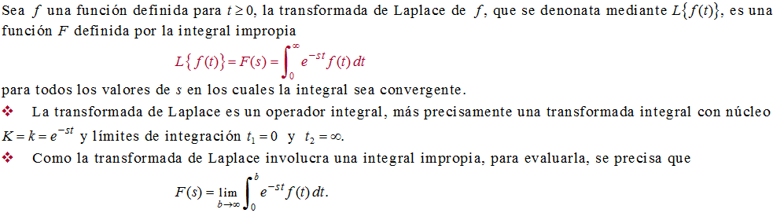
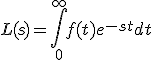

La integral de Laplace es:

L(s)=\int_{0}^{\infty} {f(t)e^{-st}}dt
La ecuación anterior fue realizada en:
[https://www.codecogs.com/latex/eqneditor.php]
El código de la ecuación es:
L(s)=\int_{0}^{\infty} {f(t)e^{-st}}dt
Para consultar Latex
[http://elclubdelautodidacta.es/wp/2011/07/latex-capitulo-1-introduccion/]